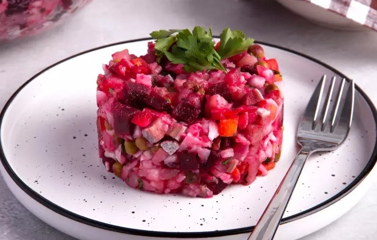

приготовление:
-
3 средние свёклы помыть и запекать в духовке при 200 градусах около полутора часов, до готовности. Затем остудить.
-
2 крупные моркови и 3 картофелины помыть, отварить в кожуре до готовности и остудить.
-
Остывшие морковь, картофель и свёклу почистить и нарезать кубиками. Добавить нарезанные маринованные огурцы — примерно столько же по объёму, сколько моркови, 300 г квашеной капусты и 1 банку белой фасоли без жидкости. Всё перемешать, при необходимости посолить и заправить оливковым маслом.